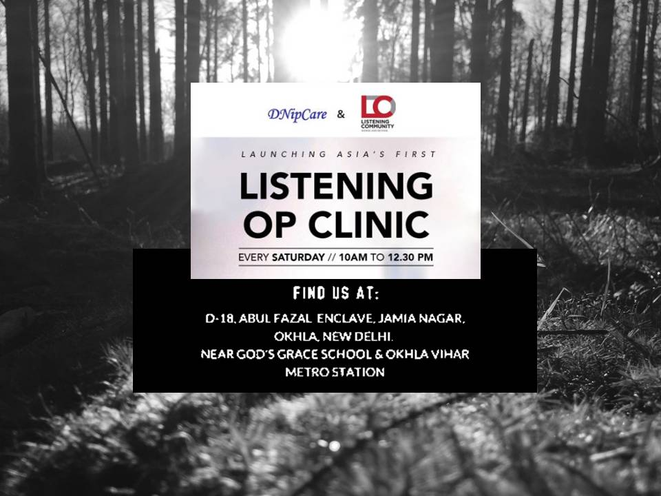

“The most basic and powerful way to connect to another person is to listen. Just listen.
Perhaps the most important thing we ever give each other is our attention”.
-Rachel Naomi Remen-
Listening is a humane, supportive and practical response to a fellow human being who has been exposed to serious stresses, sufering, and in need for a holding. It gives a frame work for supporting people in ways to provide assistance, comfort and support to people in distress and promote calm, connectedness, hope and overall psycho-social and spiritual wellbeing (Which does not include, pressuring them to talk).
The concept of listening community emerged when a group of students volunteered with DiNip Care, a Delhi based pain and palliative care society, as psychological aid providers to trauma patients. In the course of their work, the volunteers soon realized the transformative power of true listening and its potential to significantly afect lives of others. Thus, the idea of a community devoted to listening each other was born. Listening community is an independent group of individuals who serve together with the common interest to create awareness about listening, to promote development of listening skills, and provide training in cultivation of listening behavior, as well as providing listeners. It is not for profit and primarily driven by young professionals and experts in the field of Mental Health.
It is important to diferentiate between general psychological support and the way listeners provide help in responsible ways. LC acts like a bufering system between stressor and core mental health. The primary role of listening is to instill in people a sense of calm (in the face of stressor), to protect and promote the mental health and psychosocial wellbeing of individuals, by mainly understanding the person’s need for expression and building an appropriate response to that.
‘Let`s Listen!’ is the movement which attempts to bring people together irrespective of their backgrounds, to connect them in deep and meaningful ways, thus facilitating a sense of understanding and companionship.
‘Let’s listen!’ is our message to address daily life difculties and distress, to garner positive relationships, to cement a sense of belongingness, resulting in creation of caring and sensitive environment.
History
It all began when we were working at DNip care, a palliative care society based in Delhi. Our frequent visits to Cancer patients served as an eye opener about the human desire and longing to be heard. So we listened to them patiently and in no time they were exhibiting visibly positive changes in their attitudes and energy. Despite no major eforts from us we were able to soothe and comfort them by simply listening.
Everyone wishes to be heard, it is an inherent need. Criticism, judgement and unsought solutions find their way when we had only asked them to simply lend their ears. Regardless of the constant debate over how decadent and self-seeking our society has become, we firmly believe that society if motivated and their eforts channelised can achieve wonders. Well informed and empowered societies are crucial in this regard and that's where our dream of "Listening Community" takes birth.
Goals of LC
• To create awareness, impart knowledge and create expertise in the field of listening behavior.
• To encourage and empower individuals to improve their quality of life and help them achieve sound health and wellbeing.
• To study and conduct research on listening behavior.
• To support and disseminate research and development on all aspects of listening.
• To support the growth and integration of listening communities and similar kind of initiatives across the world.
LC professionals
• Mental health and allied health professionals.
• Health care promoters/ professionals.
• Teachers and other education professionals.
• Members from faith-based organizations.
• Volunteers and other trained responders from community organizations, Students etc.
Who does LC work for?
• Hospitals - Individuals with mental/physical/terminal illness
• Out Patients Clinics - Substance Abusers; Trauma survivors
• Counseling centers - Individuals dealing with psychological conflicts
• School/College/University Counseling Cells - To help students
• Elderly / children / Palliative care centers
How LC will work?
• LC will recruit volunteers for position of Agents of Compassion i.e. Listeners.
• These Listeners would then be provided appropriate mandatory training by our experts : in efective Listening and psychological First Aid.
• Interested Listeners will then provide his/her services to the assigned person/group (client) by ofering support in the form of non judgmental listening and compassion.
• In case of situations requiring expert intervention, these Listeners connect the client with an expert on our panel.
• There will be continued monitoring and supervision on part of our panel professionals to help our Listeners develop and serve better.
• In addition to this, we also organize events to create Awareness towards Mental Health and development.
Where can it be provided?
Although Listening as a service can be ofered in myriad settings, it is often required the most in community settings or places where distressed people are served, such as healthcare centers, shelters or camps, distribution sites for food and similar settings. Ideally, Listening requires a quiet, relatively distraction free setting ensures privacy. Maintaining confidentiality on part of the listener is another unavoidable tenet of listening. Regard for the other, especially for people who have been exposed to certain types of stressful events, such as sexual violence, ensuring privacy and confidentiality is essential to respect the person’s dignity.

For More Information
Phone:
+91 9747345137
+91 7560977795
Facebook: Click Here
Instagram:Click Here
New Delhi, India